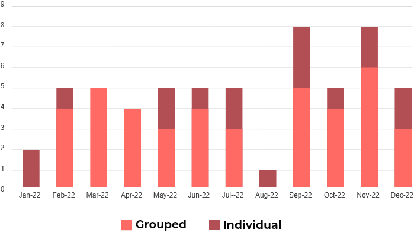
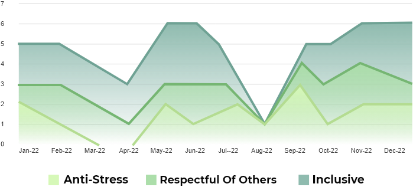

Follow-up on issues; Monitor toxicity feedbacks between employees and HR's actions results
Employees under-report toxicity cases to HR because they believe nearly nothing would happen
The Case Management Dashboard helps HR ensure that all cases are processed.
Anonymized Toxicity Feedbacks sent by employees to each other is a permanent snapshot of toxicity in the field.
The list of top toxicity feedback recipients shows the most toxic employees, according to colleagues for HR to keep an eye on
Analysis of nature and type of Anonymized Toxicity feedback and reports and Kudos give HR a good snapshot of the company’s toxicity culture
Analysis by Nature of Anonymized Feedbacks and Reports to HR
Analysis by Types of Anonymized Feedbacks and Reports to HR
The list of top non-toxicity kudos recipients shows the most empathic employees, according to colleagues for HR to support and help promote
Analysis by Nature of Anonymized kudos
HR Response to Anonymized Toxicity Reports
Results to HR Response to Anonymized Toxicity Reports
Leadership needs to keep track of the anonymity abuse attempts, And of abusers who lost access to the anonymity features because of that

Serial senders and coordinated sendings likely abuse
Leadership needs to keep track of the anonymity abuse attempts, And of abusers who lost access to the anonymity features because of that
Abuse of Anonymized Reports to HR